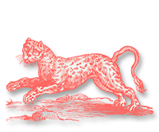
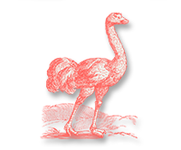
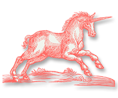
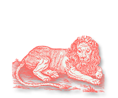

<div style='display:block;background-color:#fff;'>
	
	<div class='estantero' style='width:100%;display:inline-table;'>
		<div class='droppable ciencias dropacti3' rel='a_1' style='margin-top:2%;margin-left:13%;'></div>
		<div class='droppable ciencias dropacti3' rel='a_2' style='margin-top:2%;'></div>
		<div class='droppable ciencias dropacti3' rel='a_3' style='margin-top:2%;'></div>
		<br/>
		<div class='dropacti3' style='margin-top:0;margin-left:13%;'>
			
			
		</div>
		<div class='dropacti3' style='margin-top:0;'>
			
			
		</div>
		<div class='dropacti3' style='margin-top:0;'>
			
			
			</div>
		<br/>
		<div class='droppable ciencias dropacti3' rel='a_4' style='margin-top:0;margin-left:13%;'></div>
		<div class='droppable ciencias dropacti3' rel='a_5' style='margin-top:0;'></div>
		<div class='droppable ciencias dropacti3' rel='a_6' style='margin-top:0;'></div>
		<br/>
		<div class='dropacti3' style='margin-top:0;margin-left:13%;'>
			
			
		</div>
		<div class='dropacti3' style='margin-top:0;'>
			
			
		</div>
		<div class='dropacti3' style='margin-top:0;'>
			
			
		</div>
		<br/>
		<div class='droppable ciencias dropacti3' rel='a_7' style='margin-top:0;margin-left:13%;'></div>
		<div class='droppable ciencias dropacti3' rel='a_8' style='margin-top:0;'></div>
		<div class='droppable ciencias dropacti3' rel='a_9' style='margin-top:0;'></div>
		<br/>
		<div class='dropacti3' style='margin-top:0;margin-left:13%;'>
			
			
		</div>
		<div class='dropacti3' style='margin-top:0;'>
			
			
		</div>
		<div class='dropacti3' style='margin-top:0;'>
			
			
		</div>
		<br/>
		<div class='droppable ciencias dropacti3' rel='a_10' style='margin-top:0;margin-left:13%;'></div>
		<div class='droppable ciencias dropacti3' rel='a_11' style='margin-top:0;'></div>
		<div class='droppable ciencias dropacti3' rel='a_12' style='margin-top:0;'></div>
		<br/>
		<div class='dropacti3' style='margin-top:0;margin-left:13%;'>
			
			
		</div>
		<div class='dropacti3' style='margin-top:0;'>
			
			
		</div>
		<div class='dropacti3' style='margin-top:0;'>
			
			
		</div>
		<br/>
		<div class='droppable ciencias dropacti3' rel='a_13' style='margin-top:0;margin-left:13%;'></div>
		<div class='droppable ciencias dropacti3' rel='a_14' style='margin-top:0;'></div>
		<div class='droppable ciencias dropacti3' rel='a_15' style='margin-top:0;'></div>
		<br/>
		<div class='dropacti3' style='margin-top:0;margin-left:13%;'>
			
			
		</div>
		<div class='dropacti3' style='margin-top:0;'>
			
			
		</div>
		<div class='dropacti3' style='margin-top:0;'>
			
			
		</div>
		<br/>
		<div style='width:75%; position:relative;z-index:15;margin-top:1%;display:inline-cell;float:left;'></div>
	</div>
	<br/>
	<div id='cont_piezas' style="width:100%;float:left;display:block;height:110px;display:block;">
		
		<div class='m1 draggable  a_13 dragacti3' rel='a_13' style='position:relative;z-index:20005;'>
			
		</div>
		<div class='m2 draggable a_3 bien1 dragacti3' rel='a_3'>
			
		</div>
		<div class='m3 draggable  a_5 dragacti3' rel='a_5'>
			
		</div>	
		<div class='m4 draggable  a_15 dragacti3' rel='a_15'>
			
		</div>
		<div class='m5 draggable  a_6 dragacti3' rel='a_6' style=''>
			
		</div>
		<div class='m6 draggable a_8 dragacti3' rel='a_8' style=''>
			
		</div>
		<div class='m7 draggable  a_9 dragacti3' rel='a_9' style='display:none;'>
			
		</div>	
		<div class='m8 draggable  a_11 dragacti3' rel='a_11' style='display:none;'>
			
		</div>
		<div class='m9 draggable  a_7 dragacti3 bien3' rel='a_7' style='display:none;'>
			
		</div>
		<div class='m10 draggable a_14 dragacti3' rel='a_14' style='display:none;'>
			
		</div>
		<div class='m11 draggable  a_10 dragacti3' rel="a_10" style='display:none;'>
			
		</div>	
		<div class='m12 draggable  a_4 dragacti3' rel="a_4" style='display:none;'>
			
		</div>
		<div class='m13 draggable  a_1 dragacti3' rel="a_1" style='display:none;'>
			
		</div>
		<div class='m14 draggable a_2 dragacti3' rel='a_2' style='display:none;'>
			
		</div>
		<div class='m15 draggable  a_12 dragacti3' rel='a_12' style='display:none;'>
			
		</div>	
		
		
	</div>
</div>
<br/>
<br/>
<script type='text/javascript'>
	if(lan=="en")
    {
		$(".banner_es").css("display","none");
		$(".banner_en").css("display","");
	}
	else
	{
		$(".banner_en").css("display","none");
		$(".banner_es").css("display","");
	}
	var correctas=0;
	var mostrar=6;
	texto_es ="Continúa explorando esta guía interactiva, termina las actividades y conoce más sobre la biblioteca";
	texto_en="Continue exploring this interactive guide , complete activities and learn more about the library";
	var titulos_en=["","The Deer","The Leopard","The Elephant","The Lion","The Tiger","The Panther","The Eagle","The Ostrich","The Pelican","The Mermaid","The Unicorn","The Griffin","The Beaver","The Alligator","The Vulture"];
	var textos_en=["","The deer tends to correct his mistakes. When he is overwhelmed by a disease, he eats snakes, so he can change his skin and rejuvenate. He represents a man who does penance, because to purge his sin, he must mortify himself and suffer.",
					"A Leopard is a fast multi-colored species, it is born of adultery between the lioness and another species. It represents the sinner who is full of stains due to his mistakes and crimes.",
					"Elephants possess great intelligence and a good memory. They are sweet and gentle. Elephants are not afraid of bulls but mice terrify them.",
					"A Lion is courageous and aggressive. He is the son of God and is human and divine at the same time. A Lion is afraid of men because he humbled himself by becoming human. The lioness represents the Virgin Mary and the young lion represents Jesus Christ.",
					"A Tiger is fierce and cruel. The tigress cannot see a mirror without fixing her eyes on it because she derives great pleasure from contemplating the beauty of her reflection.",
					"A panther is beloved by all animals except the snake. He is peaceful and very smart. After a meal, the Panther naps for three days after which he wakes up and roars. His mighty roar and the soft fragrance that flows from his mouth, brings all animals together.",
					"An Eagle is fair and never hesitates. When he is getting older, he looks for a spring of pure water, flies toward the sun and burns off all his old feathers. After that, he flies down into the spring, in which he immerses himself three times, coming out young again.",
					"Ostriches are birds, but are not made for flight. The female lays her eggs and does not take care of them. This is how she behaves. A wise man, to earn the love of God, abandons those who begot him.",
					"Is a symbol of charity and mercy. When the pelican's chicks are born, they beat their parents in the face. The parents beat them too, killing them. But the parents grieve for their offspring and after they have mourned for three days, the mother opens her side and spills her blood on the bodies of her offspring who awaken to life once again.",
					"A Mermaid is seductive and deadly. Her melodious voice charms travelers to the point that she throws them in the sea where they drown. Her body is that of a tempting woman with a tail as scaly as that of a fish.",
					"A Unicorn is an animal of great shrewdness. It has a horn in the middle of its head. To catch it, a pure and chaste maiden clothed with a robe must be sent, the unicorn will jump into to the lap of the maiden who gains his confidence and leads him to the hunter.",
					"Is the largest bird in the sky of immeasurable cruelty. He has the body of a lion, his wings and face are like those of an eagle. He lives one thousand seven hundred years and the females lay eggs when they are three hundred years of age.",
					"A Beaver is meek and has great wisdom. He is plagued by hunters who find good use for his genitalia. When he is being hunted, he severs his own genitalia in a single bite and leaves them before his hunter, who stops the persecution since he has what he was looking for.",
					"When the alligator gets older, his eyes cloud over and he goes blind, so he enters a narrow hole in a wall that faces the sun. When the sun rises, he opens his eyes and they are healthy again. He represents a man who seeks God after his heart has become cloudy.",
					"A Vulture possesses an excellent sense of smell, and goes wherever a man of great wisdom speaks. A Vulture fasts for forty days and then when he finds food, he eats forty measures."];
	var titulos_es=["","Ciervo","Leopardo","Elefante","León","Tigre","Pantera","Águila","Avestruz","Pelícano","Sirena","Unicornio","Grifo","Castor","Lagarto","Buitre"];
	var textos_es=["","El ciervo tiende a enmendar sus errores. Cuando se siente abrumado por la enfermedad, come serpientes, así cambia de piel y rejuvenece. Representa al hombre que hace penitencia, pues para purgar su pecado debe mortificarse y sufrir.","Es una especie variopinta y veloz. Nace del adulterio de la leona y del pardo. Representa al pecador que está lleno de manchas por sus errores y crímenes.","Posee gran inteligencia y memoria. Es dulce y bondadoso. Temible para los toros y no obstante los ratones le asustan.","Es valiente y agresivo. Es el hijo de Dios. Es humano a la vez que divino. Le teme a los hombres pues se humilló al encarnarse en humano. La leona representa a la Virgen María y el leoncillo a Jesucristo.","Es feroz y cruel. La tigresa no puede ver un espejo sin fijar sus ojos en él pues encuentra placer en contemplar la belleza de su reflejo.","Querida por todos los animales excepto las serpientes. Es pacífica y muy inteligente. Luego de comer, duerme y después de tres días se levanta y ruge. Con su voz y el suave perfume que brota de su boca, reúne a todos los animales.","Es recta de juicio y nunca duda. Cuando empieza a envejecer, busca un manantial de agua pura, vuela hacia el sol y quema todas sus viejas plumas. Después desciende volando hacia la fuente, en la que se sumerge tres veces, volviendo a salir joven.","Es un ave, no está hecha para el vuelo. Pone sus huevos y no se ocupa de ellos. Así se comporta el hombre sensato, para ganar el amor de Dios, abandona a quien lo engendró.","Es un símbolo de caridad y misericordia. Cuando nacen sus polluelos, golpean a sus padres en el rostro. Estos los golpean a su vez, matándolos. Pero los padres se afligen por sus hijos, y después de haberse lamentado durante tres días, la madre se abre el costado y deja caer su sangre sobre los cuerpos de sus polluelos para despertarlos a la vida.","Es seductora y mortífera, su voz es melodiosa y los viajeros quedan encantados por ella al punto de arrojarse en el mar donde se ahogan. Su cuerpo es de tentadora mujer con cola escamosa como la de los peces.","Es un animal de gran astucia. Tiene un cuerno en la mitad de la cabeza. Para atraparlo se envía a una doncella pura y casta revestida de una túnica, el unicornio salta al regazo de la doncella, quien lo amansa y lo conduce hasta su cazador.","El ave más grande de todas las del cielo, de crueldad desmedida. Tiene el cuerpo de un león, sus alas y rostro son como las de un águila. Vive mil setescientos años y pone huevos cuando tiene trescientos años de edad.","Es manso y de gran prudencia. Acosado por cazadores que encuentran en sus miembros genitales gran uso. Cuando es perseguido corta sus propios órganos de un solo mordisco y los deja ante su cazador, quien abandona la persecución pues ya tiene lo que buscaba.","Cuando el lagarto envejece se le nublan los ojos y queda ciego, así que entra por un orificio estrecho de un muro que dé al sol. Cuando amanece se le abren los ojos y vuelven a quedar sanos. Representa al hombre que busca a Dios después que su corazón se encuentra nublado.","Posee excelente olfato, va allá donde siente que habla un hombre de gran sabiduría. Ayuna durante cuarenta días y después cuando encuentra alimento come cuarenta medidas."];
	$(".droppable").tap(function(){
		zw=$(this).attr("rel");
		zt=zw.split("_");
		n=zt[1];
		if(lan=="es")
		{
			textos=textos_es;
			titulos=titulos_es;
		}
		else
		{
			textos=textos_en;
			titulos=titulos_en;
		}
		$("#mensaje").html("<br/><h1 style='text-align:center;position:relative;z-index:20002;' class='subtitulo'>"+titulos[n]+"</h1><br /><br /><p style='width:80%;margin-left:10%;text-align:left;position:relative;z-index:20002;'>"+textos[n]+"</p>");
				$(".mensaje").show();
				$(".m"+mostrar).show();
		return false;
		});
	$( ".draggable" ).draggable({
		revert:true,
		}
	);
	
	$(".droppable").each(function(){
		$(this).droppable({
			accept:"."+$(this).attr("rel"),
			drop:function(event,ui){
				th=$(this).attr("height");
				$(this).html(ui.draggable.html());
				at=ui.draggable.attr("rel");
				a=at.split("_");
				n=a[1];
				correctas++;
				mostrar++;
				if(lan=="es")
				{
					textos=textos_es;
					titulos=titulos_es;
				}
				else
				{
					textos=textos_en;
					titulos=titulos_en;
				}
				if(correctas==15)
				{
					terminar=1;
				}
				$("#mensaje").html("<br/><h1 style='text-align:center;position:relative;z-index:20002;' class='subtitulo'>"+titulos[n]+"</h1><br /><br /><p style='width:80%;margin-left:10%;text-align:left;position:relative;z-index:20002;'>"+textos[n]+"</p>");
				$(".mensaje").show();
				$(".m"+mostrar).show();
				ui.draggable.detach();
				$(this).droppable( "option", "disabled", true );
				},
      
    });
    });
    
</script>
